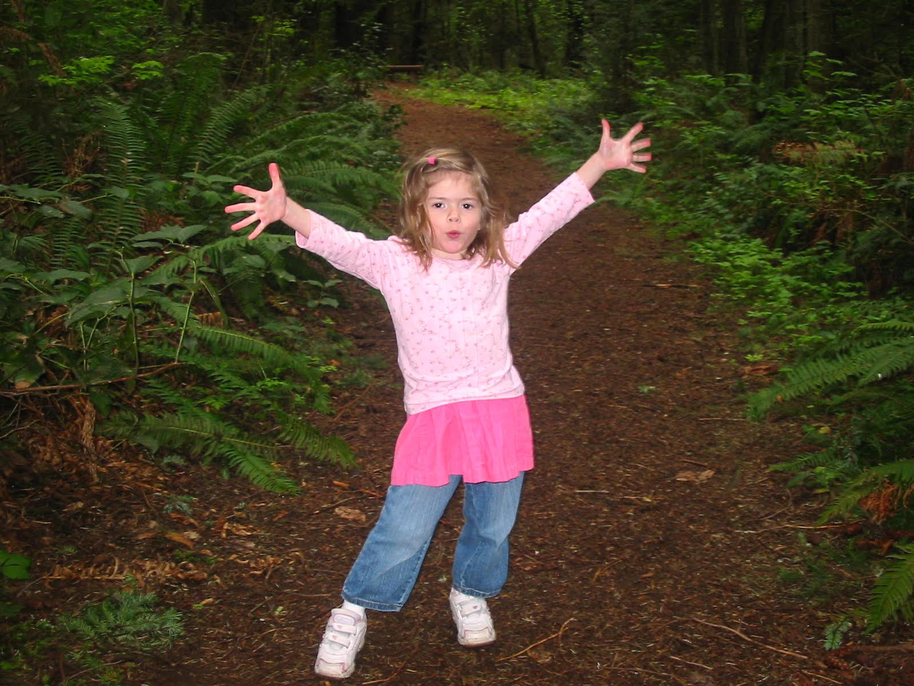
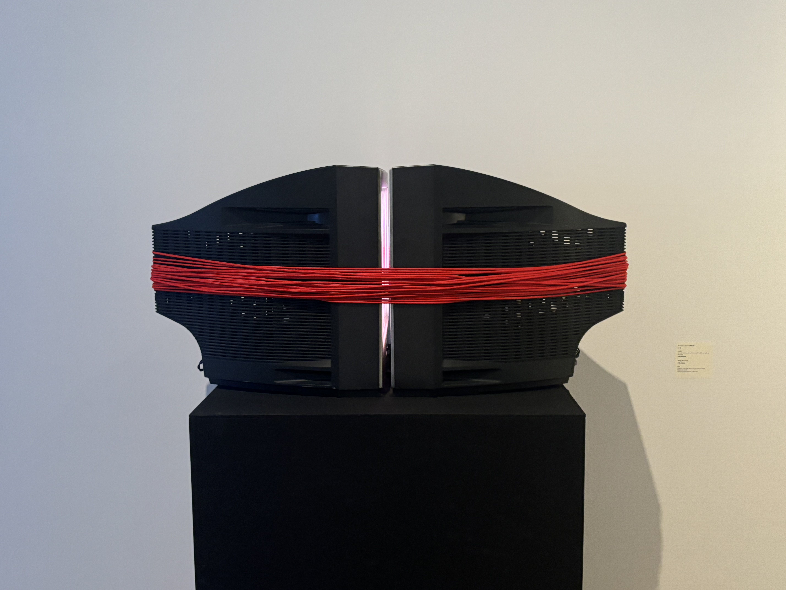

Understanding Game Design Principles
Date: March 3, 2025
The following article by Fuego Games went into depth on to the importance what principles help provide a seamless user experience. Beyond providing outstanding graphics the following principles are taken into account to create a smooth gameplay experience.
Top 7 Important Game Design Principles by Fuego Games
-
⟡ Set Clear Goals and Objectives
-
⟡ Engaging Core Mechanics
-
⟡ Maintain Game Flow and Player Experience
-
⟡ Balancing the Game
-
⟡ Offer Feedback & Rewards
- ⟡ Playtesting
-
⟡ Sound Design
Games commonly have one main goal which is split into a series of small goals to keep the user motivated throughout their journey. This provides structure for the game and builds a sense of achievement for the user, keeping them motivated to move forward. Having a simple core game mechanics such as jumping, collecting power-ups, and sliding. Keeping it simple helps the users perform the actions intuitively. To Maintain Game Flow and Player Experience means to have a consistency in symbols, phrases, actions, and a set color scheme. To Balance the Game it is important to make the challenges at a certain level of difficulty that is nor too easy or too difficult to surpass. Offering Feedback and Rewards helps keep the audience engaged, this can be visual, auditory, or text. Playtesting the game at every level is key in order to detect any changes early on and resolve them quickly. Lastly, Sound Design helps create an immersive experience for the user by bringing life to the game.
Source: Understanding Game Design Principles
Studio 2:Visual Thinking Analysis
Date: February 13, 2025

Image Taken by Jess's Parent
The first image is what my classmate Jess McPeak had shared for her project concept. She shared two images, one of her childhood self and another was of her mother taking a photo of ducks. Her project revolves around the emotions of the individual she has a clsoe relationship outside of the frame. The most interesting was the color grading of the image, it has the nostlagic vibe and most likely was taken on an early digital camera. She seems very excited to have her picture taken and explore a new space. Lastly the most obvious aspect of the photo is that she is clearly with family since it's a forest setting but also it's the most mysterious because the regular viewer cannot easily identify what location she is actuallly in. Suggestions to push the visual thinking narrative of the images further is to perhaps get quotes of the people who took the photos she will use for the madlibs to record their POV at the time and detail a little story of their journey on life.

Image taken by Jasmine G. @ the Mori Art Museum in Tokyo
This image is interesting because at first glance you have no choice but to think what's going on here??? This image is an art piece that displayed in June 2024 at the Mori Art Museum in Tokyo, Japan. I unfortunately cannot read Japanese and despite trying to locate the artist I have been unsuccessful in finding them. This image rellates to the topic of my archived collection as my project will focus on art pieces in museums that caught my eye, and in each piece I will go into depth on how it resonates with me, what song I would associate with, and my analysis on what is going on. In terms of updating the images, it may be nice to have to have the subject in the image cut out and displayed front and center for clarity.
Visual Thinking Strategies Research
Date: February 9, 2025
I chose to observe the website, Niki Studio, they are an Independent Digital Design studio that is based in Vietnam and pride themselves in their digital storytelling strategies represented through their craft. Their website is immediately eye-catching, their is slight movement in the background, the cursor is a circle, and their color pallete is simple which helps highlight the websites content. There is strong visual design all around but a major drawback is that when clicking into new pages or content about their past projects, it takes about 30 seconds to load. The circle cursor itself also runs a bit delayed after one's own cursor. Due to the websites large amount of content despite the website being responsive, if you play around with the width of the website you will occasionally be faced once again with the loading screen. Overall, I think the website features a strong design and animations that are complimentary to the content, I never once felt overwhelmed. The designers Dung Pham and Thinh Hung did an amazing job when constructing this website.
Additional Source: 10 Intriguing Photographs to Teach Close Reading and Visual Thinking Skills
Research Form Design
Date: January 20, 2025
Form Design Practices has evolved over the years and increasingly improved usability for it's users, still it is inevitable to come across poorly designed forms online. Some key practices that stood out in the article, Best practices for form design by Salim Ansari, were not overloading the user with complex form questions first but rather easy form questions first to reduce users form abandonment. Most users are motivated to finish tasks they have started. Another practice that stood out was the use of default values in forms, it is key to do research prior to entering a default value in users forms to prevent submittal errors. Lastly, another practice that stood out to me was the minmization of drop down menus if a dropdown menu has less than 6 options, the designer could opt for radio buttons to easily display the array of options, reduce uneccessary clickks, and easily check multiple options. Overall Salim provided 20 tips to boost usability which were all insightful.
One form that demobstrates a best form practice would be the Khan Academy's login page, although there are clearly direct labels on top of each input field and various CTA buttons that prompt the user to log in through Google, Apple, Facebook, or Clever.
Best Practices for Modals/Overlays/Dialog Windows
Date: January 6, 2025
In the article Best Practices for Modals/Overlays/Dialog Windows by Baskanderi, she mtated that modals have become a nightmare for many users in modern web pages, although not intentional they have occasionally been seen as a dreaded pop-up window. A modal is a child of the parent window that is used to display a message, blocking any interactivity from the main web page until it has been interacted with. Five recommended uses for Modals include, gaining a user’s attention, needing user inputs (sign up, log in), and showing additional information both in and out of context. Information deemed to be in context would be an enlarged image or video added onto the webpage, and an example of out of context information would be anything that is not directly related to the parent page such as notifications. It is important that modals are NOT used to display error, success, or warning messages.
Anatomy of a Modal Window
A Modal consists of five different elements; a title, button label, close label, it’s size, and a shadow to make it stand out. Modals must provide an easy way for users to escape, methods to escape include clicking outside the window, the esc key, and the close button. The titles must be descriptive of the modal's purpose, the button must be a clearly written CTA, a regular popup size not too big nor too small, never exceeding over 50% of the screen. Lastly, to remain focused on the modal window, it is purposely contrasted with the parent page.